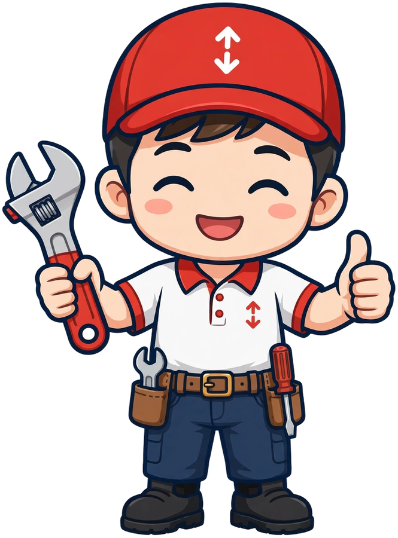
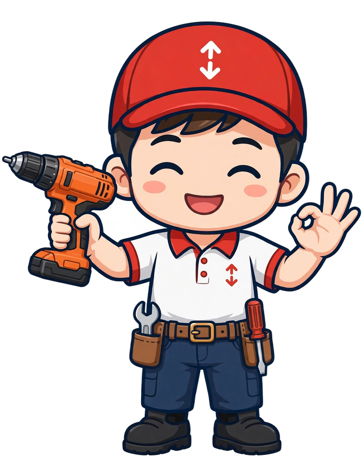
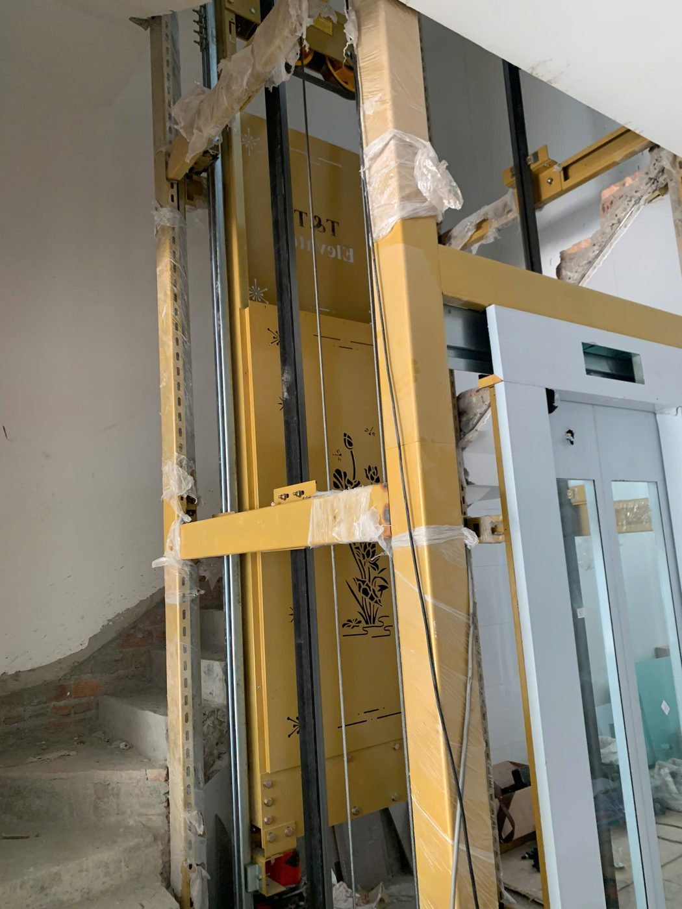
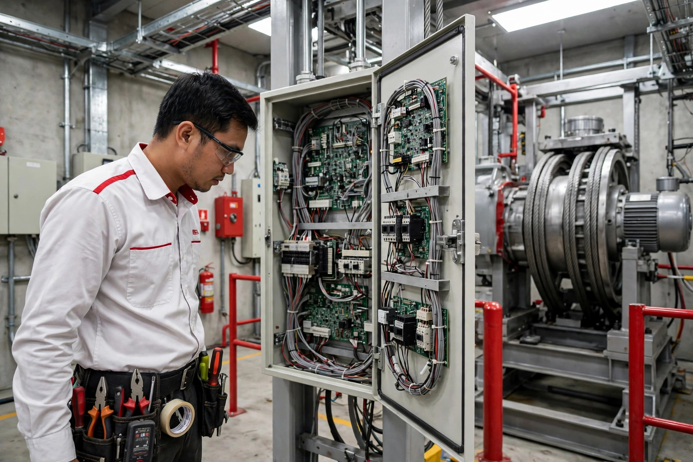

Bảo trì thang máy
Bảo trì định kỳ theo lịch hẹn: kiểm tra, vệ sinh, bôi trơn và hiệu chỉnh toàn bộ hệ cơ – điện, ghi nhận tình trạng thang sau mỗi kỳ.
Xem chi tiết →Dịch vụ thang máy — TP. Hồ Chí Minh
T&T nhận bảo trì định kỳ, sửa chữa, cải tạo và lắp đặt thang máy cho chung cư, tòa nhà, nhà xưởng và nhà ở. Khảo sát hiện trạng trước khi báo giá.
☎ 0907.622.773 Yêu cầu khảo sát
Checklist đầy đủ, biên bản sau mỗi lần

Đúng nguyên nhân, báo giá trước khi sửa

Tư vấn theo hố thang & nhu cầu thật
Thang cũ chạy êm, hiện đại hơn
T&T chuyên dịch vụ thang máy tại TP. Hồ Chí Minh: bảo trì định kỳ, sửa chữa, cải tạo – nâng cấp và lắp đặt thang máy cho chung cư, tòa nhà văn phòng, nhà xưởng, bệnh viện, trường học và nhà ở riêng lẻ.
Nguyên tắc làm việc của T&T: khảo sát hiện trạng trước, báo giá theo từng hạng mục rõ ràng, khách đồng ý mới làm — không phát sinh hạng mục ngoài báo giá khi chưa trao đổi lại.
Bảo trì định kỳ theo lịch hẹn: kiểm tra, vệ sinh, bôi trơn và hiệu chỉnh toàn bộ hệ cơ – điện, ghi nhận tình trạng thang sau mỗi kỳ.
Xem chi tiết →Tiếp nhận báo lỗi, khảo sát – chẩn đoán nguyên nhân, báo giá từng hạng mục trước khi sửa, chạy thử và bàn giao sau khi hoàn thành.
Xem chi tiết →
Tư vấn chọn loại thang theo công trình, cung cấp và lắp đặt thang máy mới, nghiệm thu bàn giao theo quy trình.
Xem chi tiết →Khảo sát thang cũ và đề xuất cải tạo từng phần hoặc toàn bộ: tủ điện, máy kéo, cabin, cửa tầng — để thang chạy ổn định và an toàn hơn.
Xem chi tiết →Hỗ trợ kỹ thuật qua hotline khi thang gặp sự cố; hướng dẫn xử lý an toàn ban đầu và cử kỹ thuật tới theo khu vực.
Xem chi tiết →Khảo sát hiện trạng thang và công trình, tư vấn phương án bảo trì / sửa chữa / lắp mới, báo giá chi tiết theo hạng mục.
Xem chi tiết →Ảnh chụp tại các công trình thang máy gia đình T&T đã lắp đặt và đang thi công.

Khách gọi hotline 0907.622.773, nhắn Zalo hoặc gửi form trên website: cho biết địa chỉ, loại thang và tình trạng đang gặp.
Kỹ thuật tới xem thang thực tế: kiểm tra vận hành, ghi nhận lỗi, đo các thông số cơ bản và chụp lại hiện trạng linh kiện cần xử lý.
T&T gửi báo giá tách từng hạng mục — nhân công, linh kiện, thời gian thực hiện — khách xem và quyết định, không làm khi khách chưa đồng ý.
Làm đúng hạng mục đã thống nhất: bảo trì, sửa chữa, thay linh kiện hoặc lắp đặt. Phát sinh ngoài báo giá sẽ trao đổi lại trước khi làm.
Chạy thử toàn hành trình cùng khách, bàn giao tình trạng thang sau khi làm và hẹn lịch bảo trì kỳ tiếp theo nếu khách dùng gói bảo trì.
Tần suất bảo trì tùy tần suất sử dụng và khuyến nghị của nhà sản xuất — thang chung cư, tòa nhà đông người cần bảo trì thường xuyên hơn thang gia đình. T&T sẽ đề xuất lịch cụ thể sau khi khảo sát hiện trạng thang của khách.
Có. Kỹ thuật khảo sát, xác định nguyên nhân và báo giá từng hạng mục cần làm trước; khách đồng ý mới tiến hành sửa chữa.
Chưa có một mức giá chung — giá phụ thuộc số điểm dừng, tải trọng, dòng thang và hiện trạng. Xem trang Gói bảo trì để chọn gói, sau đó liên hệ 0907.622.773 để được báo giá theo thang thực tế.
Có nhận tư vấn và thực hiện cho nhà ở, tòa nhà, chung cư và nhà xưởng. Phương án cụ thể xác định sau khảo sát công trình.
Giữ bình tĩnh, bấm chuông/intercom trong cabin, không tự cạy cửa. Người ở ngoài gọi ngay hotline 0907.622.773 để được hướng dẫn và cử kỹ thuật tới hỗ trợ. Trong phạm vi 10 km, kỹ thuật T&T có mặt trong vòng 2 giờ kể từ khi tiếp nhận yêu cầu.
Có. Mọi linh kiện cần thay đều nằm trong báo giá hạng mục gửi khách duyệt trước khi làm. Phát sinh ngoài báo giá sẽ trao đổi lại, không tự ý thay.
Nếu lỗi lặp lại ở cùng một hệ thống (tủ điện, máy cửa…), cải tạo đúng hạng mục thường ổn định hơn sửa chắp vá. T&T khảo sát tổng thể rồi đề xuất theo thứ tự ưu tiên để khách quyết định.
Thông tin này khách trao đổi trực tiếp khi ký dịch vụ để T&T xác nhận theo từng trường hợp cụ thể.
Thời gian bảo hành được xác định theo từng trường hợp, tùy tình trạng thực tế của thang sau khi T&T khảo sát và đánh giá. Điều kiện bảo hành được ghi rõ trong báo giá và hợp đồng trước khi thi công để khách hàng nắm rõ quyền lợi của mình.
Có. Việc hỗ trợ kiểm định an toàn được thực hiện tùy theo nội dung hợp đồng mà khách hàng ký với T&T. Khi đến kỳ kiểm định, T&T sẽ thông báo và phối hợp thực hiện để thang máy luôn đáp ứng yêu cầu an toàn theo quy định.
Thời gian lắp đặt phụ thuộc vào điều kiện thực tế của công trình như hố thang, kết cấu và mức độ hoàn thiện. Sau khi khảo sát, T&T sẽ thông báo tiến độ cụ thể trong báo giá để gia đình chủ động sắp xếp.
T&T phục vụ tại TP.HCM và các tỉnh lân cận. Khách hàng ở khu vực khác vui lòng liên hệ hotline 0907.622.773 để được tư vấn theo từng trường hợp cụ thể.
Các thông số này tùy theo nhu cầu sử dụng của từng gia đình. Sau khi khảo sát thực tế, T&T sẽ tư vấn cấu hình phù hợp về tải trọng, kích thước cabin, hố thang và nguồn điện. Gia đình chưa cần quyết định trước — chỉ cần liên hệ để được khảo sát và đề xuất phương án.
Trong phạm vi 10 km, kỹ thuật T&T có mặt trong vòng 2 giờ kể từ khi tiếp nhận yêu cầu hỗ trợ khẩn cấp. Ngoài phạm vi này, thời gian di chuyển cụ thể sẽ được thông báo ngay khi tiếp nhận. Hotline hỗ trợ: 0907.622.773.
Lắp thang máy cho nhà ở cần tính trước từ giai đoạn xây dựng hoặc cải tạo. Ba yếu tố dưới đây quyết định phần lớn chi phí và phương án thang. Vị trí và kích thước hố thang Hố thang có thể đặt trong lòng cầu thang, góc nhà hoặc ngoài trời. Kích thước […]
Đọc tiếp →Nhiều khách ký bảo trì nhưng chưa rõ một kỳ bảo trì chuẩn gồm những việc gì. Bài này tóm tắt các nhóm hạng mục chính để khách dễ đối chiếu khi kỹ thuật làm việc. Nhóm cơ khí Kiểm tra máy kéo và phanh, cáp tải, ray dẫn hướng, guốc trượt; vệ sinh và […]
Đọc tiếp →Thang máy hiếm khi hỏng đột ngột mà không có dấu hiệu trước. Nhận biết sớm 5 dấu hiệu dưới đây giúp tránh sự cố lớn và chi phí sửa chữa cao. 1. Thang chạy rung, giật hoặc phát tiếng kêu lạ Tiếng kêu có thể đến từ ray dẫn hướng khô dầu, guốc trượt […]
Đọc tiếp →
Gọi hotline hoặc gửi yêu cầu khảo sát — T&T khảo sát hiện trạng trước khi báo giá.